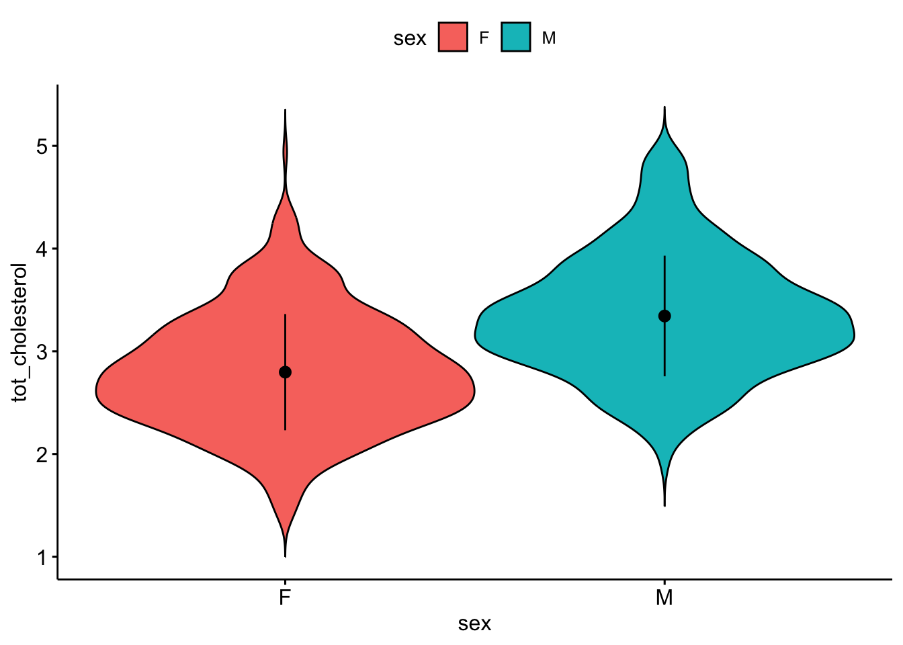
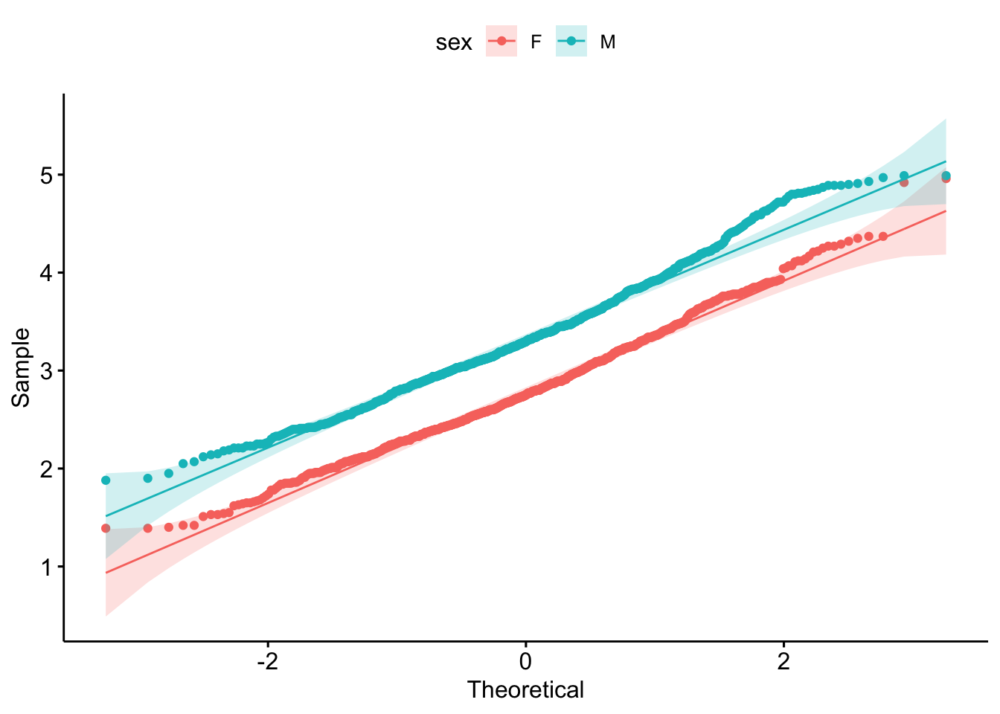
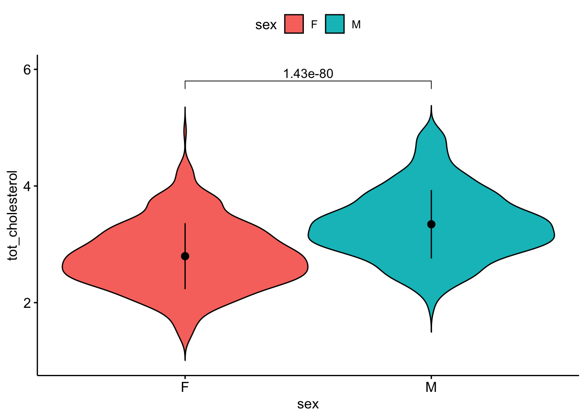
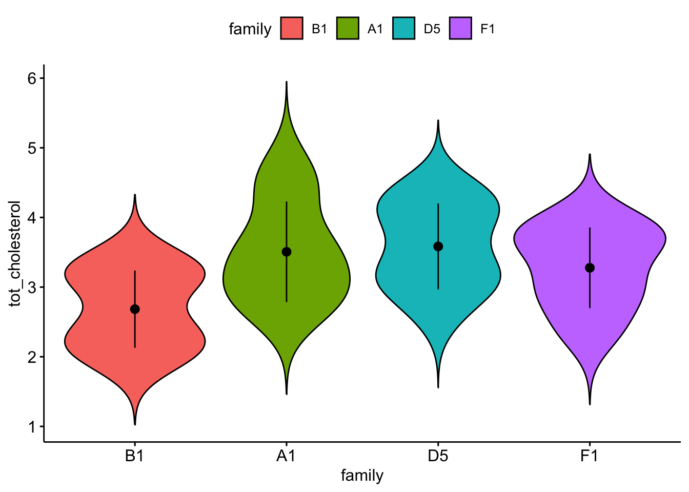

Problem Set Stats Bootcamp - class 12
Hypothesis Testing
biochem <- read_tsv(
"http://mtweb.cs.ucl.ac.uk/HSMICE/PHENOTYPES/Biochemistry.txt",
show_col_types = FALSE
) |>
janitor::clean_names()
# simplify names a bit more
colnames(biochem) <- gsub(
pattern = "biochem_",
replacement = "",
colnames(biochem)
)
# we are going to simplify this a bit and only keep some columns
keep <- colnames(biochem)[c(1, 6, 9, 14, 15, 24:28)]
biochem <- biochem[, keep]
# get weights for each individual mouse
# careful: did not come with column names
weight <- read_tsv(
"http://mtweb.cs.ucl.ac.uk/HSMICE/PHENOTYPES/weight",
col_names = F,
show_col_types = FALSE
)
# add column names
colnames(weight) <- c("subject_name", "weight")
# add weight to biochem table and get rid of NAs
# rename gender to sex
b <- inner_join(biochem, weight, by = "subject_name") |>
na.omit() |>
rename(sex = gender)Problem # 1
Does mouse sex explain mouse total cholesterol levels? Make sure to run chunks above.
1. Examine and specify the variable(s) (1 pt)
The response variable y is \(tot\_cholesterol\)
The explantory variable x is \(sex\)
Make a violin plot: (2 pt)
response variable on the y-axis
explanatory variable on the x-axis
ggviolin(
data = b,
y = "tot_cholesterol",
x = "sex",
fill = "sex",
add = "mean_sd"
)
Get n, mean, median, sd (1 pt)
b |>
group_by(sex) |>
get_summary_stats(
tot_cholesterol,
type = "common",
show = c("mean", "median", "sd")
)# A tibble: 2 × 6
sex variable n mean median sd
<chr> <fct> <dbl> <dbl> <dbl> <dbl>
1 F tot_cholesterol 891 2.80 2.75 0.566
2 M tot_cholesterol 891 3.34 3.3 0.587Is it normally distribute? (1 pt)
ggqqplot(
data = b,
x = "tot_cholesterol",
color = "sex"
)
b |>
group_by(sex) |>
shapiro_test(tot_cholesterol) |>
gt()| sex | variable | statistic | p |
|---|---|---|---|
| F | tot_cholesterol | 0.9913284 | 4.268190e-05 |
| M | tot_cholesterol | 0.9868903 | 3.759361e-07 |
Yes, based on the qq-plot and the high \(n\), but i do understand if you want to play it safe due to the shapiro_test p-value.
Is it variance similar between groups? (1 pt)
b |>
levene_test(tot_cholesterol ~ sex) |>
gt()Warning in leveneTest.default(y = y, group = group, ...): group coerced to
factor.| df1 | df2 | statistic | p |
|---|---|---|---|
| 1 | 1780 | 0.6460877 | 0.4216222 |
Yes
What kind of test are you picking and why? (1 pt)
t_test since i think it is normally distribute, with equal variance based on levene test
2. Declare null hypothesis \(\mathcal{H}_0\) (1 pt)
\(\mathcal{H}_0\) is that \(sex\) does not explain \(tot\_cholesterol\)
3. Calculate test-statistic, exact p-value and plot (2 pt)
| .y. | group1 | group2 | n1 | n2 | statistic | df | p |
|---|---|---|---|---|---|---|---|
| tot_cholesterol | F | M | 891 | 891 | -20.01933 | 1780 | 1.43e-80 |
statres <- b |>
t_test(tot_cholesterol ~ sex, var.equal = T, ref.group = "F")
ggviolin(
data = b,
y = "tot_cholesterol",
x = "sex",
fill = "sex",
add = "mean_sd"
) +
stat_pvalue_manual(
statres,
label = "p",
y.position = 5.8
) +
ylim(1, 6)Warning: Removed 1 row containing missing values or values outside the scale range
(`geom_violin()`).
can reject null hypothesis
# i have pre-selected some families to compare
myfams <- c(
"B1.5:E1.4(4) B1.5:A1.4(5)",
"F1.3:A1.2(3) F1.3:E2.2(3)",
"A1.3:D1.2(3) A1.3:H1.2(3)",
"D5.4:G2.3(4) D5.4:C4.3(4)"
)
# only keep the familys in myfams
bfam <- b |>
filter(family %in% myfams) |>
droplevels()
# simplify family names and make factor
bfam$family <- gsub(pattern = "\\..*", replacement = "", x = bfam$family) |>
as.factor()
# make B1 the reference (most similar to overall mean)
bfam$family <- relevel(x = bfam$family, ref = "B1")Problem # 2
Does mouse family explain mouse total cholesterol levels? Make sure to run chunk above.
1. Examine and specify the variable(s) (1 pt)
The response variable y is \(tot\_cholesterol\)
The explantory variable x is \(family\)
Make a plot: (2 pt)
response variable on the y-axis
explanatory variable on the x-axis
ggviolin(
data = bfam,
y = "tot_cholesterol",
x = "family",
fill = "family",
add = "mean_sd"
)
Get n, mean, median, sd (1 pt)
bfam |>
group_by(family) |>
get_summary_stats(
tot_cholesterol,
type = "common",
show = c("mean", "median", "sd")
)# A tibble: 4 × 6
family variable n mean median sd
<fct> <fct> <dbl> <dbl> <dbl> <dbl>
1 B1 tot_cholesterol 11 2.68 2.6 0.555
2 A1 tot_cholesterol 12 3.51 3.41 0.722
3 D5 tot_cholesterol 20 3.58 3.58 0.617
4 F1 tot_cholesterol 11 3.28 3.43 0.579Is it normally distribute? (1 pt)
ggqqplot(
data = bfam,
x = "tot_cholesterol",
color = "family"
)
bfam |>
group_by(family) |>
shapiro_test(tot_cholesterol) |>
gt()| family | variable | statistic | p |
|---|---|---|---|
| B1 | tot_cholesterol | 0.8864050 | 0.1253641 |
| A1 | tot_cholesterol | 0.9304722 | 0.3851437 |
| D5 | tot_cholesterol | 0.9470242 | 0.3241655 |
| F1 | tot_cholesterol | 0.9173114 | 0.2968795 |
yes
Is it variance similar between groups? (1 pt)
b |>
levene_test(tot_cholesterol ~ family) |>
gt()Warning in leveneTest.default(y = y, group = group, ...): group coerced to
factor.| df1 | df2 | statistic | p |
|---|---|---|---|
| 170 | 1611 | 1.139081 | 0.1165763 |
yes
What kind of test are you picking and why? (1 pt)
anova_test since i think it is normally distribute and has equal variance
2. Declare null hypothesis \(\mathcal{H}_0\)
_0$ is that \(family\) does not explain \(tot\_cholesterol\) (1 pt)
3. Calculate test-statistic, exact p-value and plot (2 pt)
bfam |>
anova_test(tot_cholesterol ~ family) |>
gt()| Effect | DFn | DFd | F | p | p<.05 | ges |
|---|---|---|---|---|---|---|
| family | 3 | 50 | 5.401 | 0.003 | * | 0.245 |
ggviolin(
data = bfam,
y = "tot_cholesterol",
x = "family",
fill = "family",
add = "mean_sd"
) +
stat_anova_test()
My interpretation of the result